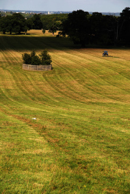
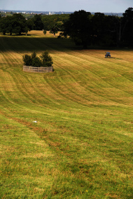
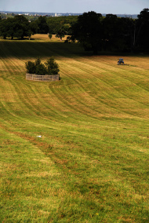

Cumberland Lodge dates from the seventeenth century and was a royal residence before being given to the nation by the late Queen Mother and her husband, King George VI, in 1947. Today it is a unique, world-class conference venue for professional and academic gatherings.
The Lodge has individually decorated en suite rooms, award winning cuisine served in elegant dining rooms, as well as a bar, gym, games room and tennis court. Wireless internet is available throughout the site. Despite its proximity to London and Heathrow Airport, the Lodge is set within the beautiful parkland of Windsor Great Park, providing both superb views and a number of interesting local walks.
For more details, including information on wheelchair access at the Lodge, see: http://www.cumberlandlodge.ac.uk/

Photographs by Zheng Li, King's College London